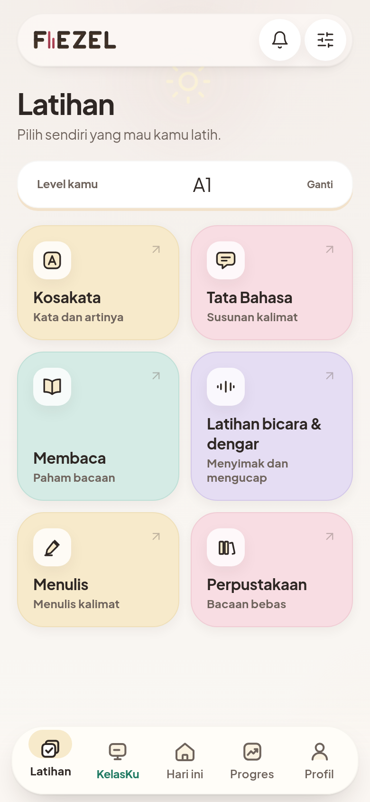

Grammar Hub berjenjang
180 lesson dari A1 sampai C2, tiap lesson 25 soal latihan terfokus, terbuka bertahap lewat prasyarat.
- A1 17
- A2 29
- B1 52
- B2 39
- C1 24
- C2 19
Not just learning with you. Learning about you.


Kebanyakan orang berhenti belajar bukan karena kurang materi, tapi karena tidak tahu harus mulai dari mana. Ini satu putaran nyata di dalam FIEZEL — bukan ilustrasi.
Kamu menjawab
I have finished it yesterday.
Belum tepat
FIEZEL berhenti di sini kalau ia aplikasi kuis biasa.
FIEZEL menjelaskan polanya
Kamu ngira present perfect selalu berarti masih jalan sekarang. Padahal maknanya lampau tanpa waktu pasti yang masih nyambung ke sekarang.
Aturannya: present perfect nggak bisa jalan bareng keterangan waktu lampau yang pasti — “yesterday”, “in 2019”, “last week”.
Bukan cuma “salah”, tapi kenapa salah.
Sesi berikutnya berubah
Rencana besok disusun dari kesalahan hari ini.
Gratis, tanpa langganan
Dua kursus dalam satu aplikasi: Bahasa Inggris yang dipetakan ke CEFR A1–C2, dan Bahasa Jepang yang dipetakan ke JLPT N5–N4. Soalnya menyesuaikan jawabanmu, bukan mengikuti urutan tetap. Gratis, tanpa langganan.
Tanpa akun. Progres belajarmu tersimpan di perangkatmu sendiri.
FIEZEL adalah ruang belajar bahasa personal. Kursus Bahasa Inggris berisi 180 grammar lesson, 2.440 kosakata, 312 bacaan berjenjang dengan 1.560 soal membaca, 36 sesi speaking, dan 1.400+ latihan listening — dipetakan ke CEFR A1–C2. Kursus Bahasa Jepang berisi 422 poin grammar, 1.884 kosakata, dan 150 bacaan berjenjang — dipetakan ke JLPT N5–N4.
Cocok untuk pelajar, mahasiswa, dan siapa pun yang ingin belajar rutin tanpa kelas dan tanpa biaya: gratis, tanpa langganan, tanpa akun. Aplikasinya bisa dipasang ke layar utama seperti aplikasi biasa, dan menyesuaikan soal berikutnya dari jawabanmu.
Satu hal yang kami sebut terang-terangan: kursus Jepang belum punya listening dan speaking. Kedua latihan itu sengaja disembunyikan saat kamu memilih Bahasa Jepang, bukan ditampilkan sebagai menu kosong. Rincian lengkapnya — termasuk apa lagi yang belum ada — di halaman Tentang FIEZEL.
Untuk guru, FIEZEL punya lapisan KelasKu: menerbitkan tugas yang menempel bab Kurikulum Nasional, lalu membaca hasilnya tanpa mengoreksi manual. Selengkapnya di halaman Untuk Sekolah.


180 lesson dari A1 sampai C2, tiap lesson 25 soal latihan terfokus, terbuka bertahap lewat prasyarat.
312 bacaan berjenjang dengan 1.560 soal membaca, dari teks pendek pemula sampai bacaan panjang tingkat lanjut.
Bank kosakata bertingkat untuk dilatih berulang, tersusun mengikuti tingkat CEFR yang sedang kamu kerjakan.
36 sesi speaking plus 1.400+ latihan listening dengan bank soal dan enam format ujian bergaya IELTS dan TOEFL. Audionya TTS dari skrip orisinal, bukan rekaman ujian asli.
PAW punya 14 ekspresi yang bereaksi ke jawabanmu: penasaran, memberi petunjuk, ikut senang, ikut bingung.
Aplikasi membaca pola jawabanmu, lalu menyesuaikan soal dan pengulangan berikutnya supaya latihan tidak terlalu mudah.
Pasang ke Home Screen seperti aplikasi biasa. Setelah terpasang, materi dan latihan bisa dibuka tanpa internet.
422 poin grammar dari 27 keluarga, 1.884 kosakata, dan 150 bacaan berjenjang. Penjelasannya berbahasa Indonesia dan Thai, bukan Inggris.
Jujur: listening dan speaking belum ada untuk kursus Jepang, dan kartunya disembunyikan — bukan ditampilkan kosong.
Ruang kelas, tugas yang menempel bab Kurikulum Nasional, analitik per kompetensi, dan rapor orang tua. Selengkapnya untuk sekolah →
Suara perangkat aktif sejak awal. Suara neural diunduh sekali dan butuh jaringan saat mengunduh dan memakainya pertama kali.
Buka FIEZEL langsung dari browser. Tanpa daftar akun, tanpa unduhan.
Kerjakan tes awal 12 soal (±5 menit, tanpa nilai). FIEZEL memetakan levelmu di CEFR A1–C2.
Dapatkan target harian yang disusun dari jawabanmu sendiri, bukan angka tetap.
Setiap kesalahan kembali sebagai review. Progres tersimpan di perangkatmu.
FIEZEL bisa dipasang ke layar utama lewat menu browser, tanpa toko aplikasi. Materi dan latihan bisa dibuka tanpa internet. Suara neural dan tutor AI butuh jaringan.

Ya. Gratis, tanpa langganan. Tidak ada paket premium, tidak ada fitur yang dikunci di balik pembayaran. Seluruh 180 grammar lesson, 2.440 kosakata, dan 312 bacaan bisa kamu buka sejak hari pertama.
Tidak perlu. Kamu bisa langsung belajar. Karena tidak ada akun, progresmu tersimpan di perangkat yang kamu pakai — kalau berpindah ke perangkat lain, kamu mulai dari awal lagi.
Setelah FIEZEL terpasang ke layar utama: materi dan latihan bisa dibuka tanpa internet. Suara neural dan tutor AI butuh jaringan. Jadi belajar teks dan soal tetap jalan, sedangkan fitur suara neural dan tutor menunggu koneksi.
Ya, keduanya. Di Android pakai Chrome lewat menu ⋮. Di iPhone wajib pakai Safari lewat tombol Bagikan, karena hanya Safari yang bisa menambahkan aplikasi web ke Layar Utama iOS. Desktop Chrome dan Edge juga bisa.
Dua: Bahasa Inggris yang dipetakan ke CEFR A1–C2 dengan 180 grammar lesson, 2.440 kosakata, 312 bacaan, speaking, dan listening; serta Bahasa Jepang yang dipetakan ke JLPT N5–N4 dengan 422 poin grammar, 1.884 kosakata, dan 150 bacaan. Kursus Jepang belum punya listening dan speaking — kedua kartunya disembunyikan saat kursus Jepang dipilih, bukan ditampilkan sebagai menu kosong.
Bisa, lewat KelasKu untuk Guru: ruang kelas, tugas yang menempel bab Kurikulum Nasional, analitik per kompetensi, dan rapor orang tua. Apa adanya: bank kurikulumnya berisi 15 bab dan 115 soal untuk kelas 7–12, jadi ia alat guru menerbitkan tugas, bukan sumber materi kurikulum utama. Kapasitas terpasang 250 pengguna — cukup satu kelas, belum cukup satu sekolah. Halaman Untuk Sekolah menjelaskan semuanya, termasuk yang belum siap.
Tidak. Materi FIEZEL dipetakan ke tingkat CEFR A1–C2 sebagai acuan tingkat kesulitan. Itu bukan sertifikasi, bukan afiliasi, dan bukan pengakuan resmi dari lembaga mana pun. Hasil belajarmu di sini tidak berlaku sebagai sertifikat.
Ada. Suara bawaan perangkatmu dipakai sejak awal, dan suara neural tersedia sebagai pilihan tambahan yang diunduh sekali. Audio latihan ujian adalah TTS dari skrip orisinal, bukan rekaman ujian asli.
Catatan belajarmu — lesson yang selesai, jawaban, dan progres level — tersimpan lokal di perangkatmu. Kami tidak meminta nama, email, atau nomor telepon untuk mulai belajar. Menghapus data browser berarti menghapus progres itu juga.
Setiap grammar lesson punya 25 soal latihan terfokus, dari total 180 lesson (A1 17 · A2 29 · B1 52 · B2 39 · C1 24 · C2 19). Reading menambah 1.560 soal membaca di 312 bacaan berjenjang.
Not just learning with you. Learning about you.
Buka FIEZEL, pilih tingkatmu, dan kerjakan satu lesson — gratis, tanpa langganan, tanpa akun.